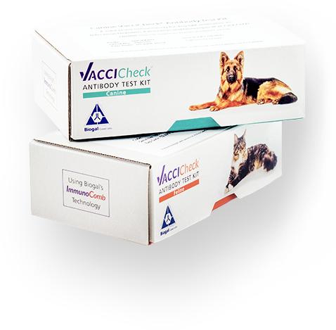

<!DOCTYPE html>
<html lang="en">
  <head>
    <meta charset="UTF-8">
    <meta name="viewport" content="width=device-width, initial-scale=1.0">
    <meta http-equiv="X-UA-Compatible" content="ie=edge">
    <title>Document</title>
    <link rel="stylesheet" href="https://fonts.googleapis.com/css?family=Poppins:200,300,400,500,600,700,800,900">
    <link rel="stylesheet" href="./bootstrap.min.css">
    <link rel="stylesheet" href="./style.css">
    <link rel="stylesheet" type="text/css" href="./slick.css">
    <!-- Google Tag Manager -->
  <script>(function(w,d,s,l,i){w[l]=w[l]||[];w[l].push({'gtm.start':
  new Date().getTime(),event:'gtm.js'});var f=d.getElementsByTagName(s)[0],
  j=d.createElement(s),dl=l!='dataLayer'?'&l='+l:'';j.async=true;j.src=
  'https://www.googletagmanager.com/gtm.js?id='+i+dl;f.parentNode.insertBefore(j,f);
  })(window,document,'script','dataLayer','GTM-PLBWLCK');</script>
  <!-- End Google Tag Manager -->
  </head>
</html>
<body>
  <!-- Google Tag Manager (noscript) -->
<noscript><iframe src="https://www.googletagmanager.com/ns.html?id=GTM-PLBWLCK"
  height="0" width="0" style="display:none;visibility:hidden"></iframe></noscript>
  <!-- End Google Tag Manager (noscript) -->
  <header class="header">
    <div class="container">
      <div class="row">
        <div class="col-md-6">
          <div class="header_logo"> </div>
          <h1 class="header_h1">Confirm Your<br class="dnone"> Patients’ Protection</h1>
          <p class="header_title">Buy Your First VacciCheck & Get $50<br class="and_dnone"> Off <br class="header_dnone">Any Other Aventix Product</p>
          <p class="header_info">Enter a new age of patient protection with<br class="ios_dnone"> the VacciCheck®<br class="header_info_dnone"> titer test kit. Validated<br class="ios_dnone"> against gold standard tests (VN and HI),<br class="ios_dnone"><br class="header_info_dnone"> VacciCheck provides fast, reliable and<br class="ios_dnone"> affordable confirmation<br class="header_info_dnone"> of core vaccine<br class="ios_dnone"> immunity for dogs and cats.</p>
          <p class="header_time_text d-flex align-items-center"><span>Order VacciCheck today and get<br class="header_time_dnone"> $50 off your next Aventix purchase.</span></p>
          <button class="header_btn_turquoise" id="header_order">Order Now</button>
        </div>
        <div class="col-md-6">
          <div class="vacci_img_wrapper"></div>
        </div>
      </div>
    </div>
  </header>
  <div class="experts">
    <div class="container">
      <div class="row">
        <div class="col-md-6 d-flex align-items-center">
          <p class="expert_title">What the experts have to<br> say about VacciCheck </p>
        </div>
        <div class="col-md-6">
          <div class="experts_slider">
            <div class="slide_wrapper slide1">
              <!--  -->
              <div class="slider-content">
                <p class="slider-title">Professor Richard B. Ford</p>
                <p class="slider-info">“Antibody titer testing for core vaccines can be a useful and reliable tool to determine if an animal has seroconverted after vaccination and to decide if the individual animal needs a revaccination…”</p>
              </div>
            </div>
            <div class="slide_wrapper slide2">
              <!--  -->
              <div class="slider-content">
                <p class="slider-title">Professor Ronald Schultz</p>
                <p class="slider-info">“This test is a rapid, simple, reliable and cost-effective "in house" assay and is especially useful to determine if a dog requires additional vaccination.” </p>
              </div>
            </div>
            <div class="slide_wrapper slide3">
              <!--  -->
              <div class="slider-content">
                <p class="slider-title">Dr Jean Dodds DVM</p>
                <p class="slider-info">"VacciCheck not only permits core vaccine confirmation of the immunity of adult animals on an annual check-up visit, but it also allows optimizing the primary vaccination protocol for puppies/kittens" </p>
              </div>
            </div>
            <div class="slide_wrapper slide1">
              <!--  -->
              <div class="slider-content">
                <p class="slider-title">Professor Richard B. Ford</p>
                <p class="slider-info">“Antibody titer testing for core vaccines can be a useful and reliable tool to determine if an animal has seroconverted after vaccination and to decide if the individual animal needs a revaccination…”</p>
              </div>
            </div>
            <div class="slide_wrapper slide2">
              <!--  -->
              <div class="slider-content">
                <p class="slider-title">Professor Ronald Schultz</p>
                <p class="slider-info">“This test is a rapid, simple, reliable and cost-effective "in house" assay and is especially useful to determine if a dog requires additional vaccination.” </p>
              </div>
            </div>
            <div class="slide_wrapper slide3">
              <!--  -->
              <div class="slider-content">
                <p class="slider-title">Dr Jean Dodds DVM</p>
                <p class="slider-info">"VacciCheck not only permits core vaccine confirmation of the immunity of adult animals on an annual check-up visit, but it also allows optimizing the primary vaccination protocol for puppies/kittens" </p>
              </div>
            </div>
          </div>
        </div>
      </div>
    </div>
  </div>
  <div class="benefis">
    <div class="container">
      <div class="row">
        <div class="col">
          <h3 class="vacci_h3 vacci_h3_dark">The benefits are clear</h3>
          <p class="benefis_info"> <span>Avoid over vaccination </span>- Validate<br class="validate_dnone"> before you vaccinate.</p>
        </div>
      </div>
      <div class="row">
        <div class="col-md-4">
          <div class="benefis_card">
            <p class="benefis_card_title">A revolutionary product</p>
            <p class="benefis_card_text b_c1">The only in-clinic titer test kit that<br class="ben_dnone"> simultaneously tests for all three<br class="ben_dnone"> core canine vaccines.  </p>
          </div>
        </div>
        <div class="col-md-4">
          <div class="benefis_card">
            <p class="benefis_card_title">Easy to use, easy to understand</p>
            <p class="benefis_card_text b_c2">Test in six simple steps and<br class="ben_dnone"> obtain clear results in just<br class="ben_dnone"> 23 minutes.  </p>
          </div>
        </div>
        <div class="col-md-4">
          <div class="benefis_card">
            <p class="benefis_card_title">Highly affordable</p>
            <p class="benefis_card_text b_c3">As opposed to sending a titer<br class="ben_dnone"> test sample to a lab, VacciCheck<br class="ben_dnone"> is far less expensive.   </p>
          </div>
        </div>
      </div>
    </div>
  </div>
  <div class="use_vacci">

    <div class="container">
      <div class="row use_vacci_how">
        <div class="col-md-6">
          <h3 class="vacci_h3 vacci_h3_white">How to use VacciCheck</h3>
          <p class="use_vacci_info">Watch the video and learn how you too can use VacciCheck to confirm <br class="use_vacci_dnone">your patients’ immunity.</p>
        </div>
        <div class="col-md-6">
          <div class="use_vacci_video">
            <iframe src="https://www.youtube.com/embed/BECmXTcy-Vk" frameborder="0" allow="accelerometer; autoplay; encrypted-media; gyroscope; picture-in-picture" allowfullscreen></iframe>
          </div>
        </div>
      </div>
      <div class="row">
          <div class="line" ></div>
      </div>
      <div class="row use_vacci_faq">
        
        <div class="col-md-7 col-lg-8">
          <h4 class="vacci_h4">VacciCheck FAQ </h4>
          <p class="vacci_toggle_question vacci_toggle_active">What makes VacciCheck a <br class="vacci_toggle_dnone">highly affordable solution?</p>
          <p class="vacci_toggle_answer vacci_toggle_answer_active">As the VacciCheck is batch tested from the comfort of your own clinic, any incurred costs are minimal, averaging roughly $20-25 per patient. Including VacciCheck in your annual checkup bundle (wellness test) is cost-effective and profitable, as most pet-owners are eager to consent to the testing at a markup, once the benefit of titer testing, has been explained to them.</p>
          <p class="vacci_toggle_question">For core vaccines, why not just<br class="vacci_toggle_dnone"> re-vaccinate every year?</p>
          <p class="vacci_toggle_answer">While vaccinations provide dogs and cats with immunity, each time they are vaccinated, your patients become potentially vulnerable to a wide variety of acute and chronic reactions, some of which can be severe, or even fatal. Clinical signs vary and can include minor adverse reactions such as fatigue and can range up to severe reactions such as anaphylactic shock, immune-mediated damage of blood and other tissues/organs, seizures and even death. As such, you want to vaccinate when pets need the immunity, but avoid over vaccination at all costs.</p>
          <p class="vacci_toggle_question">Should over vaccination be debated in the vet community?</p>
          <p class="vacci_toggle_answer">The routine administration of core vaccines in dogs and cats has resulted in excellent disease control for infections that were once considered important causes of morbidity and mortality. Although all veterinarians agree vaccines are necessary, the frequency in which they are given is debated. A blood sample taken yearly from an animal for a titer check is preferential to an unnecessary vaccination as a vaccine may cause harm. Medically, however, there isn’t any harm that might come from taking a blood sample and doing a titer check. </p>
          <p class="vacci_toggle_question">How can I effectively implement VacciCheck in my clinic?</p>
          <p class="vacci_toggle_answer">We’ll supply you with all the marketing materials you need to successfully implement VacciCheck. All that is left is to educate your clients about the benefits of titer testing. You can do so in person, during regular patient checkups, via social media, your clinic’s website and even via physical or emailed brochure – which we provide you with. </p>
          <p class="vacci_toggle_question">What are the benefits of titer testing with VacciCheck?</p>
          <p class="vacci_toggle_answer">VacciCheck is a straightforward, fear-free process your technicians can easily apply. With batch testing, you can simultaneously titer test up to 12 samples and obtain results in 23 minutes, from the comfort of your clinic. No need to send tests to an external lab!</p>
        </div>
        <div class="col-md-5 col-lg-4">
          <div class="vacci_technical">
            <h4 class="vacci_h4 vacci_h4_2">Technical Specifications </h4>
            <div class="tech_wrapper tech_should">
              <p class="tech_info">VacciCheck confirms the <br>following patient antibodies:</p>
              <p class="tech_title_turquoise">Canine</p>
              <p class="tech_point"> Infectious Hepatitis (ICH)</p>
              <p class="tech_point"> Parvovirus (CPV)</p>
              <p class="tech_point"> Distemper Virus (CDV)</p>
              <p class="tech_title_turquoise tech_title_2">Feline </p>
              <p class="tech_point"> Panleukopenia (FPLV)</p>
              <p class="tech_point not_check">*Not available in Canada</p>
            </div>
            <div class="tech_wrapper tech_ball">
              <p class="tech_title_turquoise">Registered in:</p>
              <div class="tech_point_countries tp_usa"> 
                <p class="tech_text"><span class="tech_text_bolder">USA</span>- USDA (2011)</p>
              </div>
              <div class="tech_point_countries tp_canada"> 
                <p class="tech_text"><span class="tech_text_bolder">Canada </span>- Canadian Food Inspection Agency (2013)</p>
              </div>
              <div class="tech_point_countries tp_japan"> 
                <p class="tech_text"><span class="tech_text_bolder">Japan </span>- Japanese Ministry of Agriculture, Food and Fisheries (2017)</p>
              </div>
            </div>
            <button class="btn_turquise" id="full_spec"> See Full Specifications </button>
          </div>
        </div>
      </div>
    </div>
  </div>
  <div class="evidence">
      
    <div class="container">
      <div class="row">
        <div class="col-md-6">
          <h3 class="vacci_h3 vacci_h3_dark">Empirical evidence</h3>
          <p class="evidence_info">Discover what scientific research has to say about<br class="evidence_info_dnone"> the use of VacciCheck<br class="evi_dnone"> in your clinic.</p>
        </div>
        <div class="col-md-6"> 
          <div class="profecors_wrapper">
            <div class="left_col">
              <div class="years_wrap years-left">
                <p class="years_title yt2">2013</p>
                <p class="years_info">Richard B. Ford, D. M.</p>
              </div>
              <div class="years_wrap years-left">
                <p class="years_title yt4">2017</p>
                <p class="years_info">Prof. Michael Day<br class="years_dnone"> Et Al.</p>
              </div>
              <div class="years_wrap years-left">
                <p class="years_info e_line">AAHA Canine<br class="after_canine"> Vaccination<br class="after_canine"> Guidelines</p>
              </div>
            </div>
            <div class="center_col">
              <div class="vertical_line"></div>
              <div class="plus plus1">+</div>
              <div class="plus plus2">+</div>
              <div class="plus plus3">+</div>
              <div class="plus plus4">+</div>
              <div class="plus plus5">+</div>
            </div>
            <div class="right_col">
              <div class="years_wrap">
                <p class="years_title yt1">2012</p>
                <p class="years_info">Ronald D. Schultz, P.</p>
              </div>
              <div class="years_wrap">
                <p class="years_title yt3">2016</p>
                <p class="years_info">WSAVA - Guidelines<br class="y16_dnone"> for the<br class="year16_dnone"> vaccination of<br class="y16_dnone"> dogs and cats</p>
              </div>
              <div class="years_wrap">
                <p class="years_title yt5">2018</p>
                <p class="years_info">Dr Jean Dodds DVM</p>
              </div>
            </div>
          </div>
        </div>
      </div>
    </div>
  </div>
  <div class="sign_up_container"> 
    <div class="container">
      <div class="row"> 
        <div class="col"></div>
        <div class="d-flex justify-content-between align-items-center sign_up_fline"> 
          <p class="sign_up_title">Sign up to get<br class="sign_dnone"> your VacciCheck!</p>
          <button class="btn_turquise" id="sign_up_form">Sign up & Claim your $50 credit</button>
        </div>
        <hr class="w100">
      </div>
      <div class="row">
        <div class="col d-flex justify-content-between sign_up_sline">
          <p class="sign_up_title_turquise">You’ll also get:</p>
          <div class="sign_up_point_wrapper d-flex">
            <div class="sign_up_point bordered">$50 off your next Aventix purchase</div>
            <div class="sign_up_point bordered">A free introductory Lunch & Learn session </div>
            <div class="sign_up_point">A chance to order VacciCheck today!</div>
          </div>
        </div>
      </div>
    </div>
  </div>
  <div class="footer">
    <div class="container">
      <div class="row">
        <div class="col">
          <p class="footer_text">The information contained is intended for educational purposes only. It is not a substitute for sourcing peer reviewed professional medical texts, such as the World Small Animal Veterinary Association (WSAVA) Guidelines.</p>
          <p class="footer_copy">©Biogal, Galed Labs. Acs Ltd. All rights reserved</p>
        </div>
      </div>
    </div>
  </div>
  <div class="modal_overlay"></div>
  <div class="stycky_nav">
    <div class="stycky_wrapp">
      <div class="stycky_left"> 
        <div class="stycky_img"></div><span class="stycky_link" id="expert_to">Experts say</span><span class="stycky_link"  id="benefis_to">Benefits</span><span class="stycky_link" id="use_to">How to use</span><span class="stycky_link"  id="faq_to">FAQ</span><span class="stycky_link"  id="empirial_to">Empirical evidence </span>
      </div>
      <div class="stycky_right">
        <p class="stycky_text">Get Started with $50 Credit</p>
        <button class="vacci_btn_stycky" id="s_order1">Order Now</button>
      </div>
    </div>
  </div>
  <div class="thanks_sub">
    <p class="th_sub_title">Thanks for subscribing!</p>
    <p class="th_sub_info">We appreciate your interest in purchasing VacciCheck titer test kit/s. An Aventix sales rep will get in touch with you shortly.</p>
    <p class="th_sub_g">Have a great day! </p>
    <p class="th_sub_b">Your friends at <a href="http://www.biogal.co.il/">Biogal</a></p>
  </div>
  <form class="form_vicci" id="page-form">
    <div class="close_x"></div>
    <div class="form_vicci_title">Sign up</div>
    <div class="form_vicci_info">Please enter your business<br> details below. <span class="title_bold">An Aventix sales representative will contact you to finalize your order. </span> </div>
    <input class="form_vicci_input" placeholder="Full Name" type="text" required name="fullName">
    <input class="form_vicci_input" placeholder="Email" type="email" required name="email">
    <input class="form_vicci_input" placeholder="Phone Number" type="tel" required name="tel">

    <select name="role" class="form_vicci_input form_vicci_role" required>
      <option disabled hidden selected>Role</option>
      <option value="1">Owner</option>
      <option value="2">Vet - Owner</option>
      <option value="3">Vet - Associate</option>
      <option value="4">Technician</option>
      <option value="5">Practice Manager</option>
      <option value="6"> Receptionist</option>
    </select>
    <input class="form_vicci_input" placeholder="Business Name" type="text" required name="businessName">
    <input class="form_vicci_input" placeholder="State/Province/Region" type="text" name="state" required>
    <input class="form_vicci_input" placeholder="Country" type="text" required name="country">
    <div class="cookie_wrapper">
      <div class="use_cookie_wrapper">
        <input type="checkbox" name="use_cookie" class="use_cookie" id="use_cookie" checked required>
        <label for="use_cookie" class="to_use_cookie"> </label>
      </div>
      <p class="form_text_2">This site uses cookies for analytics and<br> advertising purposes. By continuing to use<br> this site you consent to our use of cookies,<br> see our <a class="sign_link_birusa" href="http://www.biogal.co.il/biogal-privacy-policy" target="_blank"> Privacy Policy.</a></p>
    </div>
    <button class="form_button" type="submit">Sign up now<br><span>and claim your $50 credit</span></button>
  </form>
  <div class="technicalc_specific">
    <p class="tech_sp_title_1">Technical Specifications</p>
    <p class="tech_sp_title">What VacciCheck does (key test indications):</p>
    <ol class="tech_list">
      <li>Assesses adult dog/cat core vaccine immunity, enabling accurate booster scheduling</li>
      <li>Manages disease outbreaks in animal shelters by enabling proper immunization</li>
      <li>Establishes protection status of newly adopted adult dogs/cats of unknown vaccination history </li>
      <li>Confirms puppy immunity following completion of the initial vaccination series</li>
    </ol>
    <p class="tech_sp_title">Canine VacciCheck Performance*:</p>
    <div class="tech_line1"> 
      <p class="tech_and">Specificity</p>
      <p class="tech_and">Sensitivity</p>
    </div>
    <div class="tech_line2">
      <p class="tech_gray">Infectious Hepatitis (IgG): </p>
      <p class="tech_and">93%</p>
      <p class="tech_and">94%</p>
    </div>
    <div class="tech_line2">
      <p class="tech_gray">Parvovirus (IgG):   </p>
      <p class="tech_and">100%</p>
      <p class="tech_and">88%</p>
    </div>
    <div class="tech_line2">
      <p class="tech_gray">Distemper (IgG):  </p>
      <p class="tech_and">92%</p>
      <p class="tech_and">100%</p>
    </div>
    <p class="tech_sp_title">Feline VacciCheck Performance*:</p>
    <div class="tech_line1"> 
      <p class="tech_and">Specificity</p>
      <p class="tech_and">Sensitivity      </p>
    </div>
    <div class="tech_line2">
      <p class="tech_gray">Panleukopenia (IgG): </p>
      <p class="tech_and">90.4%</p>
      <p class="tech_and">97.8%</p>
    </div>
    <p class="tech_sp_title">Sampling:</p>
    <p class="tech_text_gray">5μL of plasma or serum, or 10μL of blood is used for testing</p>
    <p class="tech_sp_title">Test Time:</p>
    <p class="tech_text_gray">Results available in 23 minutes</p>
    <p class="tech_sp_title">Distribution:</p>
    <p class="tech_text_bold">U.S.A</p>
    <p class="tech_text_gray_big">MWI, Henry Schein, Patterson, VMC, Animal Health, first, USB, Midwest, WM, NEVSC, SPOT-ON</p>
    <p class="tech_text_bold">Canada</p>
    <p class="tech_text_gray_big">VP, AVP, WDDC, cdmv</p>
    <p class="tech_text_info">*Data on File - Performance Reports: </p>
    <p class="tech_text_gray_little">A field and experimental trial to assess the performance of the ImmunoComb Canine VacciCheck Antibody Test Kit.Performance Report of ImmunoComb Feline Panleukopenia Virus Antibody Test Kit</p>
    <button class="vicci_btn tech_btn" id="tech_btn_close">Close</button>
    <div class="close_x"></div>
  </div>
  <div class="empirical empirical2017">
    <div class="close_x"></div>
    <p class="e_title">2017</p>
    <p class="e_btitle">AAHA Canine Vaccination Guidelines</p>
    <p class="e_text">"A “positive” antibody test result (CDV-CPV-CAV2) generally does correlate well with protective (sterile) immunity in dogs. This applies to not only laboratory-based testing procedures (quantitative testing) but to in-clinic point-of-care (qualitative testing) antibody kits as well."</p>
    <p class="e_btitle">Prof. Michael Day<br class="years_dnone"> Et Al.</p>
    <p class="e_text">“Vaccination-challenge experiments for core vaccines, CDV, CAV and CPV have provided excellent data to show that there is a good correlation between a vaccine-induced antibody titer and protection against disease and that core vaccine last longer then 1 year.“</p>
    <p class="t_vititle">References</p>
    <p class="t_gtext">Ford, R. B., Larson, L. J., McClure, K. D., Schultz, R. D., & Welborn, L. V. (2017, February 3). AAHA Vaccination Recommendations for General Practice. From American Animal Hospital Assosiation: https://www.aaha.org</p>
    <p class="t_gtext">M.J. Day Et Al. (2017). Long-lived immunity to canine core vaccine antigens in UK dogs as assessed by an in-practice test kit. British Small Animal Veterinary Association, Journal of Small Animal Practice.</p>
  </div>
  <div class="empirical empirical2018">
    <div class="close_x"></div>
    <p class="e_title">2018</p>
    <p class="e_btitle">Dr Jean Dodds DVM</p>
    <p class="e_text">“… for the Core diseases, it is stated that once the first annual booster following the primary vaccination is done, additional boosters shall not be administered more frequently than every 3 years.”</p>
    <p class="t_vititle">References</p>
    <p class="t_gtext">Dr Jean Dodds DVM, I. R. (2018). Vaccination and Antibody Tests: 2018 Update. California, USA: Hemopet.</p>
  </div>
  <div class="empirical empirical2016">
    <div class="close_x"></div>
    <p class="e_title">2016</p>
    <p class="e_btitle">WSAVA - guidelines for the vaccination of dogs and cats</p>
    <p class="e_text">“The principles of ‘evidence based veterinary medicine’ suggest that testing for antibody status (for either puppies or adult dogs) should be better practice than simply administering a vaccine booster on the basis that this would be ‘safe and cost less’.”</p>
    <p class="e_text">"Two new in-practice titer testing kits are now available, which will allow your vet to do a titer test very quickly, without sending the blood sample to a laboratory. Ask your vet to look into this less expensive option."</p>
    <p class="t_vititle">References</p>
    <p class="t_gtext">M. J. Day, M. C. Horzinek, R. D. Schultz and R. A. Squires. (2016). WSAVA - GUIDELINES FOR THE VACCINATION OF DOGS AND CATS. Journal of Small Animal Practice.</p>
  </div>
  <div class="empirical empirical2013">
    <div class="close_x"></div>
    <p class="e_title">2013</p>
    <p class="e_btitle">Richard B. Ford, D. M</p>
    <p class="e_text">“Consider this: Does a “positive” antibody test result today assure the patient will be protected tomorrow? … or a year from now? …or 3 years from now? In a way…YES…it does.” </p>
    <p class="e_text">“Positive” antibody test results for the core diseases not only correlate with protection, but indicate that the patient has produced long-term immune (B-cell) “memory”.”</p>
    <p class="t_vititle">References</p>
    <p class="t_gtext">Richard B. Ford, D. M. (2013). Vital Vaccination Series, Antibody Titers versus Vaccination. Today’s Veterinary Practice, 35 - 38.</p>
  </div>
  <div class="empirical empirical2012">
    <div class="close_x"></div>
    <p class="e_title">2012</p>
    <p class="e_btitle">Ronald D. Schultz, P.</p>
    <p class="e_text">“This test is a rapid, simple, reliable and cost-effective "in house" assay and is especially useful to determine if a dog requires additional vaccination.”</p>
    <p class="t_vititle">References</p>
    <p class="t_gtext">Ronald D. Schultz, P. (2012, 10 16). Considerations for the Titer Testing of Core Canine Vaccines. p. 2.</p>
  </div>
  <script src="https://code.jquery.com/jquery-3.3.1.min.js" integrity="sha256-FgpCb/KJQlLNfOu91ta32o/NMZxltwRo8QtmkMRdAu8=" crossorigin="anonymous"></script>
  <script src="./slick.min.js"></script>
  <script src="./main.js"></script>
</body>